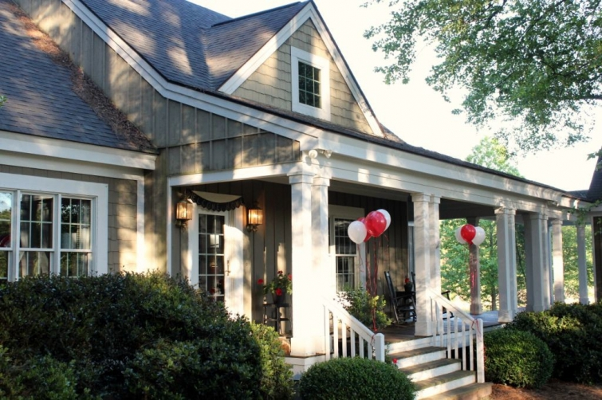
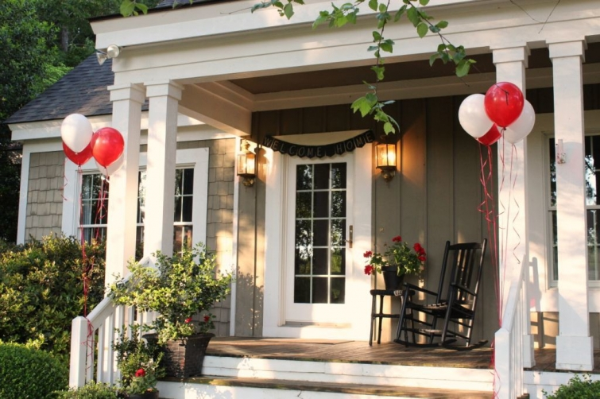
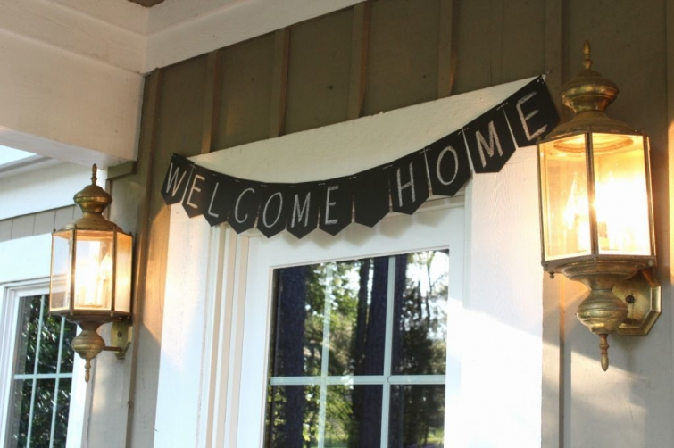

.png)
.PNG)
.PNG)
.PNG)
.PNG)
.PNG)
.JPG)
.JPG)
.PNG)
.PNG)


What a wonderful weekend we had. It was so nice to have both of our sons home for a visit. Our older son had not been home in 9 months, and our younger son had been away for a little over 2 months.
They deserved some “welcome home” decor. 🙂
(Very easy with the do-it-yourself chalkboard banner from Target.)
In the foyer I used a small kraft paper house for the “welcome home,” and the black treat boxes in the jar held their favorites – oatmeal cream pies and pecan tarts. 🙂
 I tied on a There’s no place like home tag.
I tied on a There’s no place like home tag.
(I think those little boxes and tags came from Michaels, but I am not sure.)
The fireplace was decked out for their arrival with another welcome home banner and another kraft paper house.
(That banner kit from Target had enough twine and pennants to make both of the banners. 🙂 )
The boys came in Friday evening after dinner. On Saturday morning we made a run to a relatively new nearby donut shop for our breakfast.
My parents dropped by and enjoyed a few of these treats with us.
Later, we all headed to Lane’s Southern Orchards for lunch…
and their peach and strawberry ice cream. (By the time I finish telling you about our weekend, you are going to think that all we did was eat. And you would be almost right! 🙂 )
We left Lane’s and ventured over to the Barnyard Nursery for a few plants.
Besides plants they have interesting art work in the garden.
The boys found this exploring the plants (and chickens too!)
We headed home, and they met up with a friend for some tennis and then a round of disc golf. Dad was included on that game, but I stayed home to get things ready for their welcome-home-dinner. (Can you see our new dining room table in this photo? The boys said it looked like a picnic table…which is fine with me. 🙂 )
I am going to have to stop here, but I will be back to tell you all about the dinner party and our brunch in Atlanta on the following day in the next post. I hope you will be here to hear all about them. 🙂
So how was your weekend? I hope it was a good one!
We’d love to hear about it!


.PNG)
Kelly,
Where did you find the little craft paper houses? Did you make them yourself? And which of Target’s departments carries the banners? I enjoyed your post very, very much.
———————————————————————-
Monika, they came from Hobby Lobby, but I think I have seen them at Michaels as well. They are on the aisle with the craftboard letters. (They are not expensive, and I lucked out and got them on a half price sale…making them around $2 each.) The banners were on the aisle at Target that has all the colorful paper plates, napkins, straws, ballons, etc. The banner was on the side opposite of all the colorful party stuff. Our Target has chalkboard paper and craft paper party items there. I’m happy you enjoyed the post!
Kelly
Lovely post! I agree, there really is no place like home! Your home is beautiful by the way. Thanks for sharing your weekend adventure with us. I enjoyed reading this post thoroughly.
———————————————————————-
Thank you Alexa. I’m so happy you stopped by! And congratulations on 100 posts on your blog. 🙂
Kelly
Kelly,
I have officially put Lane’s nursery and peach ice cream on my to do list. I can’t wait to see what else you guys did and ate over the welcome home weekend. I love the banners and treat boxes!
———————————————————————
I hope you get to go Dawn. In the spring they have fresh strawberries too. All of our 1st grade students took a field trip to pick them a couple of weeks ago. The peaches start in early June. Glad you liked all the welcome home decorating. 🙂
Kelly
Sounds like wonderful weekend!! I can’t imagine 9 whole months!! :/ I’m sure it made his homecoming sweeter! 🙂 I love the little chalkboard banner. I’ll have to look for one next time I am in a Target, you know “just in case.” 😉 Love the table too. 🙂
———————————————————————-
Thank you Gina. It was a wonderful weekend. Yes, look for that at Target. They had 2 different ones. This one had 24 pennants, and I think it was $3.99. I’m glad you liked our new table. It is very much picnic table looking. 🙂
Kelly
How wonderful to get a visit from your sons! It was sounding like you were eating a lot…but that trip to the nursery really helped to turn my opinion around! Great table! 😉
——————————————————————
Don’t let the nursery visit fool you Donnamae. We DID eat a lot! Thank you for the compliment on the table. (A place for more eating. 🙂 )
Kelly
That ice cream looks delicious! Also, isn’t looking at plants at a nursery more appealing than looking at plants at Lowe’s or Home Depot? Occasionally, I buy plants from big box stores, but I just hate walking over all that concrete because it’s so unnatural. Give me grass or ground over more concrete. Not to mention, you generally get personalized attention at nurseries and they actually know the plants and the care they need. Sometimes at my local Lowe’s, the staff hasn’t even known the difference between perennials and annuals.
———————————————————————–
Nona, you are so right about the nursery plants being more appealing. When we were leaving there the other day, I said, “I want our whole yard to look like this.” 🙂 My husband then said, “Well we are going to have to buy more than red, yellow, and white flowering plants!”
Kelly
Kelly, you’re pretty special. You show your family that they are missed, and specially loved and dear to you…Looks like an excellent start to their visit home.
——————————————————————–
You are too kind. It was such a nice weekend, but makes me miss the boys more.
Kelly
What a special weekend to start off the month of May! Happy early Mother’s Day visit from your boys! Looking forward to seeing your menu and hearing more about everything! Another week down — only a few more weeks until “Kelly Time!” Wondering what you have in mind for all your free time ahead?! I think there is something good around the corner– you deserve fun times ahead!! My weekend was a beach blessing– walking the beach and holding hands– wonderful breezy sunshiney weather and enjoying our favorite haddock, clam chowder dinner while watching the waves roll in– couldn’t get much better!!:) Oh, also watched the Derby and shed a tear for ” My Old Ky Home” far away!:)
———————————————————————
Happy early Mother’s Day to you too! Full time blogging is my plan for retirement…so that I can actually go to bed at a decent hour. LOL Your weekend sounded fabulous. I can’t wait until we can do a beach trip. I know you enjoyed Derby Day!
Kelly
How wonderful to have both boys home at once, and how fun of you to decorate especially for them! Hope you had a great time.
———————————————————————
Oh yes, it was! I loved decorating for this weekend…more so than for some of the other times I have decorated.
Kelly
Nothing quite like having the kids home. Sounds like a great weekend.
——————————————————————-
You are absolutely right! Nothing like it. 🙂
Kelly
Hi Kelly,
Where is the chair and ottoman from in front of your fireplace? Also, what’s the color?
I wish you lived next door to me so you could help me make some decorating decisions!
Thanks,
Cheryl
————————————————————————-
That would be such fun Cheryl! I’m afraid that the chair and ottoman are old ones that I do not know where I got them from. I do know that I had them reupholstered in this fabric: http://lsfabrics.com/fabric/perth-24 It’s a good neutral linen fabric.
Kelly
Kelly,
There’s nothing better than having your adult kids home for a visit, especially when they don’t live as close as we like! 🙂 This visit not only looks fun, but your son’s undoubtedly feel so loved and welcome with your wonderful and thoughtful touches in place. I used to think that maybe boys (as opposed to girls) didn’t notice such touches, but as my adults have become adults in their 30’s, I notice they’ve married women who enjoy the extra touches for any event or holiday! 🙂
Enjoy your visit and I can’t wait to hear what you prepared for dinner!
xo,
Karen
————————————————————————
It sounds like you have the best of both worlds with your daughters in law that appreciate the extra details. 🙂 Our visit this weekend was so nice. Not sure the boys really care about the extra details, but they didn’t complain about them either. LOL
Kelly
Oh my Kelly, you made me hungry just looking at your post. My fitbit will have to keep me from heading to the donut store. Love all your decor as usual and you are right, having the kids home when they are grown up is a treat. We are on baby watch here in No Ala….baby Audrey is set to arrive any time so we will be on the road to Northside Hospital in Atlanta to welcome her when we get word.
———————————————————————
I hope baby Audrey is making her appearance in Atlanta. Waiting is NOT fun. Drive safely on your trip to our state, and give her a kiss for me. 🙂 Best wishes for a healthy delivery – both for baby and mom.
Kelly
So glad you got to party with your sons all weekend! The food looked awesome and can I just say that your doughnut shop uses the coolest boxes!
I am sure the count down is on! Woo Hoo
——————————————————————-
It was so nice to see our boys. Just wish they could get here more often. Aren’t those just the cutest boxes?! The countdown has been on for quite awhile now – 2 weeks and a few days to go. I don’t think the reality of it will hit until everyone returns to school in August.
Kelly
It all sounds absolutely lovely. The house looks fabulous, and I now want doughnuts and peaches (it’s breakfast time here, and I haven’t eaten, but I can tell you I won’t be getting my wish! LOL) It’s so good to spend time with family 🙂
————————————————————————-
Thank you thank you Frances! Doughnuts are always so tempting, aren’t they? You should be enjoying them for your breakfast. 🙂
Kelly
Kelly, your family must just love coming home knowing the effort and love you put into making them feel special and cherished. Simply reading about it makes me feel good – can only imagine experiencing it all first hand!
Craving ice cream and peaches…have a good week.
———————————————————————–
Tricia, I don’t really think the boys care about any of the decorating, but on the other hand…the food is very much appreciated! (Now if it were our daughter she would notice all of it. 🙂 ) Sorry I made you crave ice cream and peaches! The snacks were quite yummy. 🙂
Kelly
What a great welcome home for your sons. I am sure you all had a wonderful time. I treasure every minute I get to spend with mine.
———————————————————————-
Thank you Yarlette. It was a great weekend – just too short. 🙁
Kelly
That was such a nice END to the weekend that, for a minute there, I was thinking it was the START of one!
I am such an inadequate wife and mother! Seeing all that you do for your family just brings that fact into high relief! Oh well, thanks for setting such a great example and giving me something to strive for! 🙂
Have a great week!
———————————————————————-
I bet you are not an inadequate wife and mother, Ruth. Don’t be so hard on yourself! I wish the post had been the start of the weekend, so that we could do it all again! LOL
Kelly